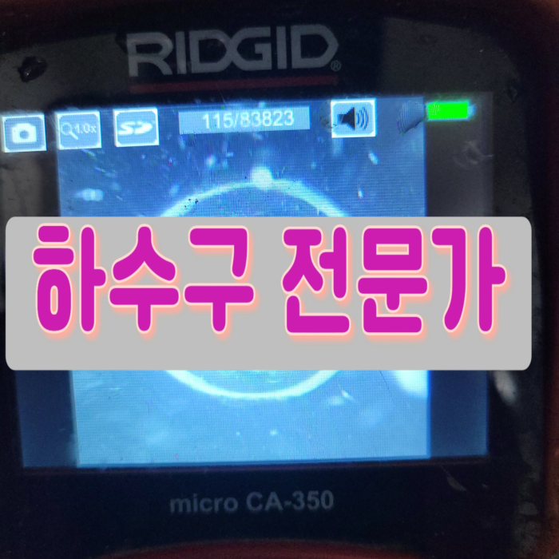
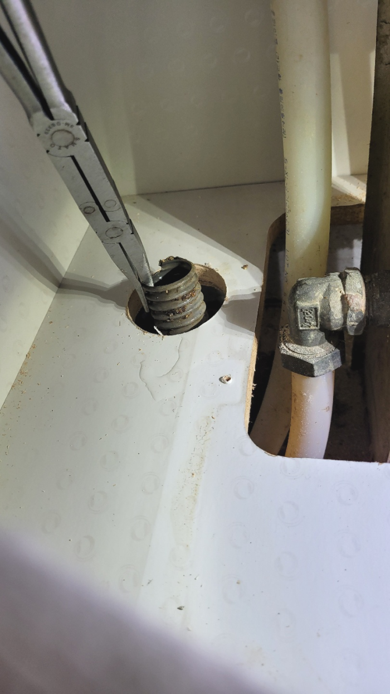
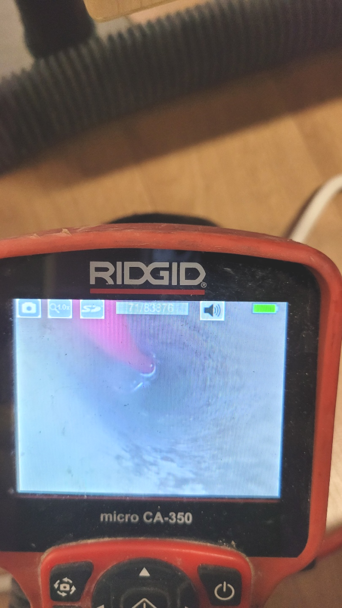
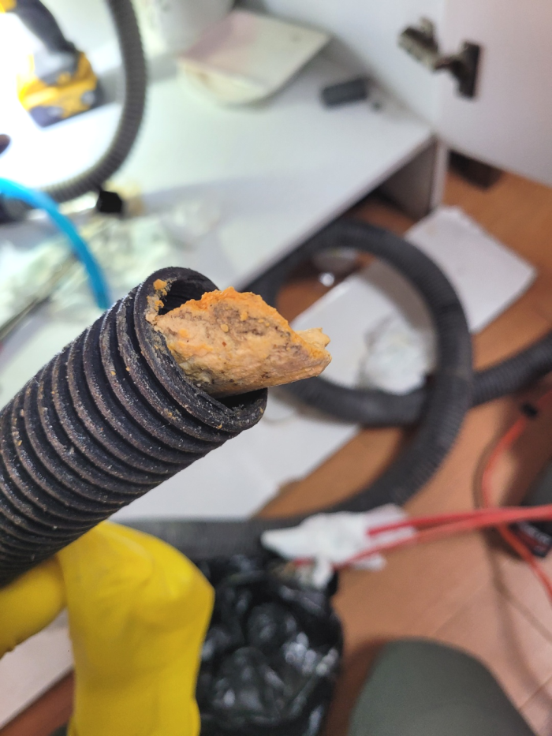
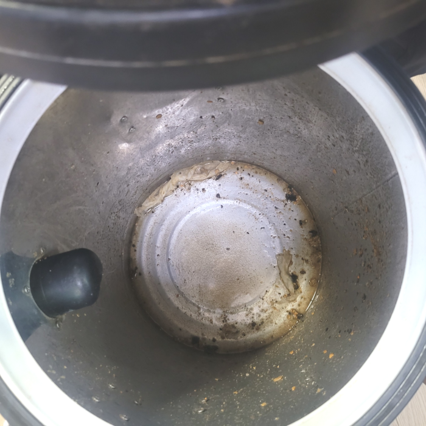
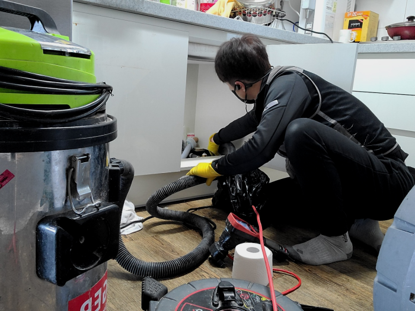
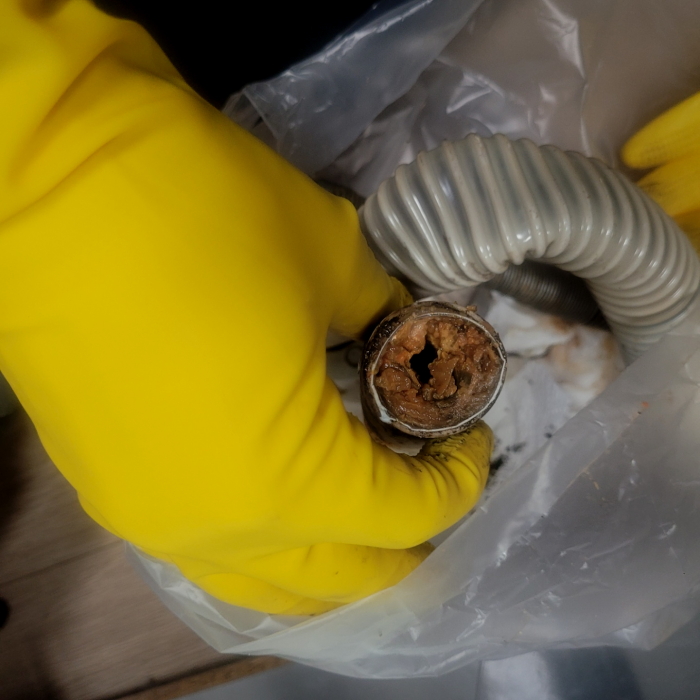

🏠 수원 매교동 싱크대 배수관막힘 지동 배수구 뚫음 배관수리 설비
수원 지동 싱크대막힘 전문 시공 후기

📋 작업 개요
- 위치: 수원 지동, 지동, 수원
- 서비스 유형: 싱크대막힘, 변기막힘, 하수구막힘, 배관막힘, 역류해결, 뚫는업체, 배관청소, 고압세척
- 작업 일시: 2023. 11. 29. 0:43
- 업체명: 하수구수사대 (010-5615-2118)
🔍 문제 상황
반갑습니다^^
설비전문업체 "하수구수사대"를 찾아주셔서 감사합니다.
안녕하세요^^ 하수막히셨나요? 만약 하수구가 막힐 경우 필요할 때 물을 사용할수가 없고 사용을 해도 물이 고여서 배수가 되지 않는다면 굉장히 불편하고 위생적으로 불쾌하실거에요.
저희는 배관막힌 곳이 있으면 어디든지 빠르고 신속하게 방문하여 확실하게 뚫어드리는 하수구 업체로 많은 문의를 받고 해결해 드리고 있습니다. 흔히 하수구가 막히게 되는 것은 일상에서 흔하게 일어나지 않기에 갑작스럽게 배수관막히게 되면 많이 당황스러울실 수밖에 없을것입니다.
수원 매교동 싱크대 배수관막힘 지동 배수구 뚫음 배관수리 설비

🔎 원인 분석
💡 전문가 진단: 수원 매교동 싱크대 배수관막힘 지동 배수구 뚫음 배관수리 설비
막힌 것 자체가 스케일이 크기 때문에 오래 걸리더라도 실속 있는 업체에 의뢰 작업해야지라고 고려하시는 분들도 많습니다. 실력부분이 신중한 포인트라고 할지라도 늦기 전에 하수관뚫지 않으신다면 모든 피해를 여러분이 짊어지게 되므로 빨리 해결해야합니다.
출장을 나갈 때에는 배출구배관이 일반적이 않거나 유선상으로 확인이 어려울 시에 출장나가 확인해 드립니다. 현장에 직접 나가보고 진단을 거치고 나야 견적을 안내해 드릴 수 있기 때문에 그때 가서 이야기 들으시고 고민하실 수 있게 하고 있습니다.
얼마 전 다녀왔던 현장은 혼자서 퇴수뚫어보시려다가 한참을 노력해도 해결이 되지 않아 전문 업체를 찾게 되셨다고 하는데요. 방문 드렸던 현장은 자주 막힘 증상이 보였던 곳이고 뚫은지 얼마 안 된 상태에서 또다시 문제가 발생해 확실한 해결을 원하셨습니다.
여러 요인으로 통수가 원활하지 않은데 그냥 써버리셨다가 내려가지도 못하고 하수관역류하기도 해서 장판 바닥이 물난리들이 나버려서 수습 불가능한 사태가 발생합니다. 발견했을 즉시 재빠른 조치가 매우중요합니다.
수많은 분들이 업체들을이 이용했어도 또 배출관막힘증상이 발생되어 반복적으로 더 돈을 내고 청소하게 되는것을 잘못 지여져 있는게 원인이 아닌 똑바로 세척하지 않은 것 때문입니다.

🔧 작업 과정
그럴 때는 관 속에 있는 이물질을 직접 제거를 하고 하수도배관이 오래된 경우에는 연결 부위에 있는 고무패킹까지도 교체를 해주어야 하는 상황이 생기기도 합니다. 이번 현장에서처럼 보통 하수도막힘이 있는 경우는 원인이 무엇인지를 파악을 하는 일이 가장 중요하다고 할 수 있습니다.
현장을 방문하여 현장에 맞는 장비를 확인한 뒤 싱크대 배수관 냄새로 불편함을 겪고 계시는 고객님 댁에 방문해 현장을 확인했습니다. 일차로 싱크대 배수관가 막힌 뒤 물이 내려가지 않아 설거짓거리가 그대로 방치된 모습을 확인할 수 있었습니다.
샤프트는 이물질을 갈아내는 장비입니다. 덕분에 크기는 작아지고 배관에서 떨어지기 때문에 석션기를 통해 흡입하여 제거할수 있습니다. 플렉스샤프트를 이용하여 막힘의 원인을 제거하도록 합니다. 노즐도 길기 때문에 깊숙한 배수관배관속도 작업이 가능하고 전체적으로 깨끗하게 만드는 스케일링 작업을 할 수 있답니다.
하나는 배관 외부에서 나타난 문제로 인해 막혔고, 또 하나는 배관 내부에서 나타난 문제로 인해 막힌 것이죠. 우선 배관 외부에서 나타난 문제인 경우, 물이 흘러가는 배수관 내부가 아닌 외부에 있는 배관 구멍으로 이물질이 들어온 경우입니다.
같은사례로 전문기사를 불러야한다면 가지고있는 배수구장비가 무엇인지 확인해보시는게좋습니다, 값싼 기계가아니기때문에 전부구비하지않는곳이 꽤많이있습니다
이만큼의전문기계라면 단단한석회라도 뚫어버릴수있다고 장담가능한데요.막혀버린상황이되셔서배출관기사를 찾고계신다면 가지고있는 장비들을 확인해보시는게 현명해요.싸게살수있는 기계가아니라서 다갖춰져있는데는 흔하지않죠.
위처럼같은상황을 예방하기위해서는 애당초 배테랑이있는지 미리확인하시는게 좋은방법이랍니다.저희팀의경우 빠짐없이 모든분들이 경력자이기에 안심하셔도됩니다.
다른회사는 재발생해서 다시연락해도 모르쇠하기도합니다.그렇게되어버린다면 비용이만만치 않아서 참담하실겁니다.이런 정직한데는 그리많지않아요.


✅ 작업 완료
장시간 두고 보시면 금방 이물질이 다시 생기면서 하수관배관이 막혀버리니 꼼꼼하고 정확하게 작업하는 곳을 고르셔야 합니다. 뭐든 싸다고 정답이 아니듯이 저렴하고 빨리 해결해 주는 곳만 찾다 보면 꼭 후회하니까 신중하게 선택해야 합니다.
그렇게 한참을 샤프트 장비로 분쇄해 주고 석션기로 떨어트린 이물질을 꺼내는 작업을 반복합니다. 엄청나게 단단하게 굳어있던 석회들까지 아래층으로 내려가 도움을 받지 않고도 고객님 댁에서만 작업을 진행하였습니다.
#하수구막힘 #하수구뚫음 #하수구역류 #씽크대막힘 #싱크대역류 #오수관막힘 #하수구청소 #욕실하수구막힘 #변기막힘 #하수구뚫는비용 #싱크대수리 #화장실막힘




⚠️ 주방 싱크대 배관 막힘 예방 수칙
- ✅ 기름기가 묻은 식기나 프라이팬은 설거지 전 키친타올로 반드시 기름때를 닦아내세요.
- ✅ 주기적으로 싱크대 개수대에 뜨거운 물을 가득 받아 한 번에 내려 배관 내부 기름을 씻어내세요.
- ✅ 배수구 거름망을 미세한 필터로 사용하시고 음식물 찌꺼기가 틈으로 새어 들지 않게 관리하세요.
- ✅ 베이킹소다와 식초를 뜨거운 물과 함께 일주일에 한 번씩 부어주면 배관 살균과 막힘 예방에 좋습니다.
💡 핵심 정리
- 확실한 장비 작업(내시경 점검 및 샤프트 스케일링)으로 원인을 뿌리 뽑습니다.
- 작업 후 1년 이내에 동일한 부위 재발 시 100% 무상 A/S 서비스를 보장합니다.
- 서울 · 경기 · 인천 전 지역에 24시간 언제든 긴급 출동할 수 있도록 항시 대기 중입니다.
❓ 자주 묻는 질문 (FAQ)
🚨 수원 지동 싱크대막힘 문제로 고민이신가요?
정확한 원인 진단과 확실한 시공으로 재발 없는 해결을 약속드립니다.
24시간 긴급 출동 | 서울 · 경기 · 인천 전지역 | 1년 내 재발 시 무상 A/S